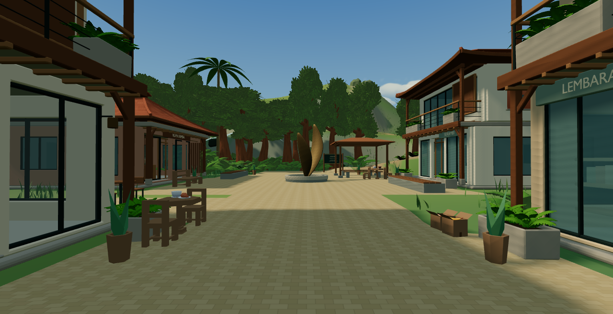
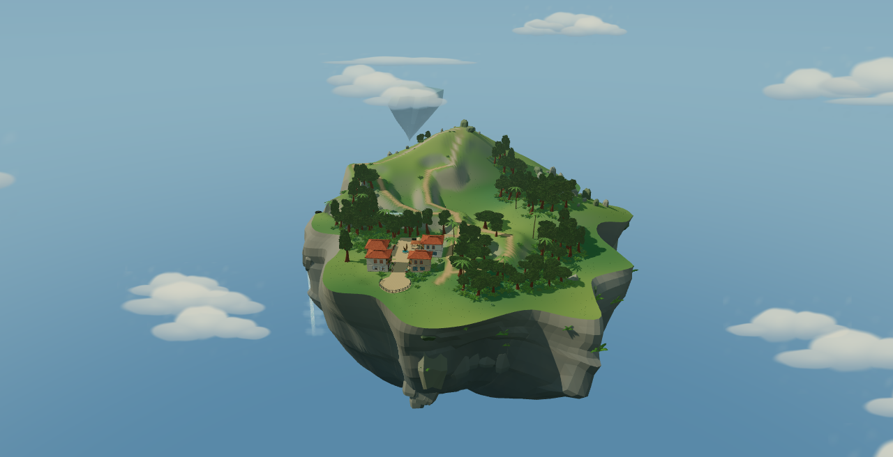
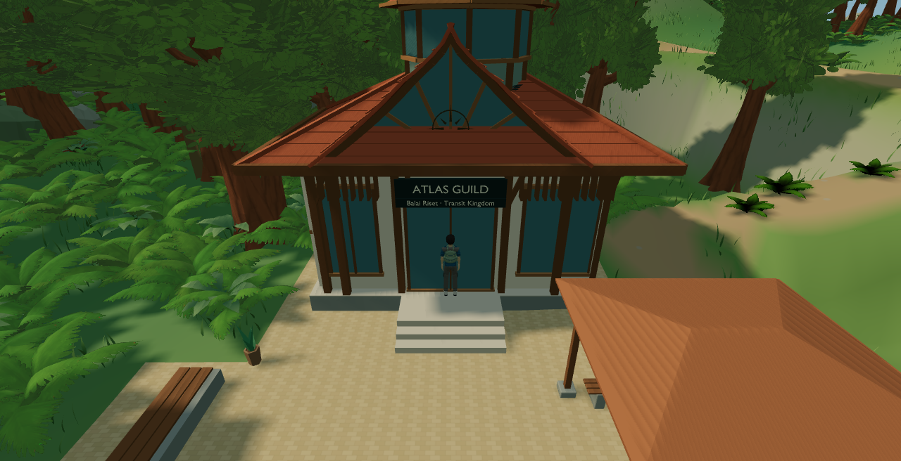
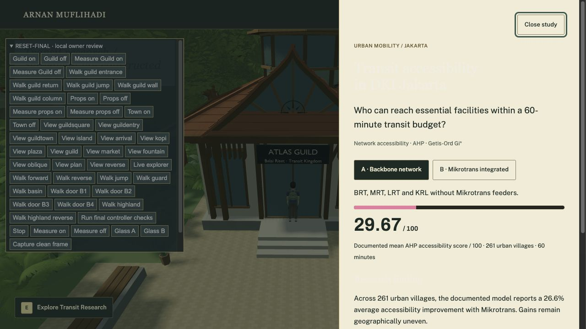

Atlas Guild: Balai Riset
One integrated research landmark in the accepted populated town. The existing four shops, fountain, pavilion, civic route, terrain and 42 prop placements are preserved. All images are actual game captures. Owner visual approval pending.
Play local Guild review · Results and rollback · Editable Blender master · Optimized GLB · Sources
From Market Street

Before: accepted populated townAfter: Atlas Guild enabledEntrance at 1.65 m eye height
Town and forest composition
Whole floating island

Before: accepted populated townAfter: Atlas Guild enabledReal explorer and research interaction

Existing controller and follow camera.
Existing transit research panel.Matched cameras, daylight, standard shadows and approved Glass B. No generated artwork, Guild proxies or new landscape. Native Cycles views are supplemental authoring evidence; browser images determine this review.